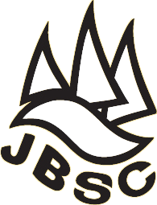
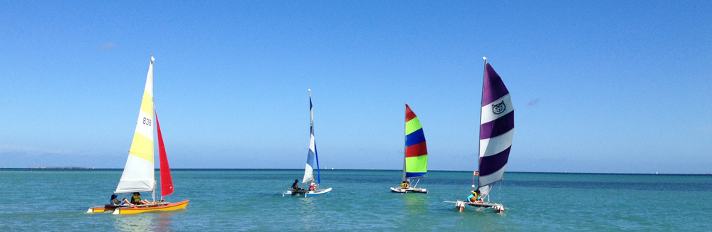

Jervoise Bay Sailing Club

The Jervoise Bay Sailing Club was established in 1977 on company land by employees at the Jervoise Bay shipyard. The club is situated at the north side of Woodman Point (Owen Anchorage).